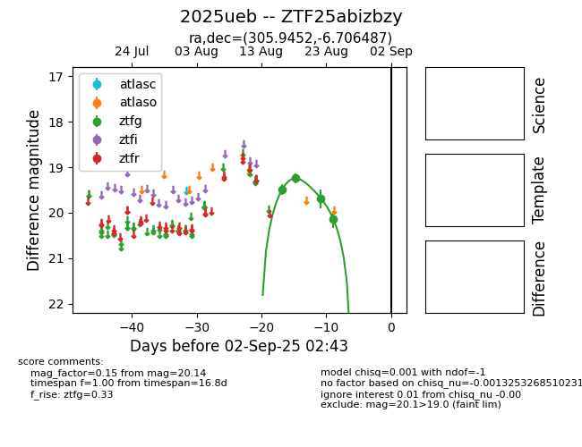

Target 2025ueb at 2025-08-21 09:29, see:
FINK: fink-portal.org/ZTF25abizbzy
Lasair: lasair-ztf.lsst.ac.uk/objects/ZTF25abizbzy
ALeRCE: alerce.online/object/ZTF25abizbzy
TNS: wis-tns.org/object/2025ueb
YSE: ziggy.ucolick.org/yse/transient_detail/2025ueb
alt names
ZTF25abizbzy (ztf,alerce)
2025ueb (tns,yse)
coordinates:
equatorial (ra, dec) = (305.9452,-6.70651)
galactic (l, b) = (37.5398,-23.56782)
photometry
last ztfg=19.24, ztfr=20.04
2 ztfg, 1 ztfr detections
